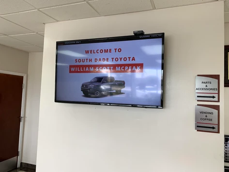
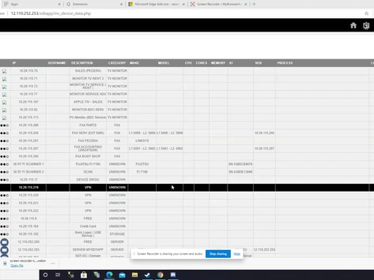
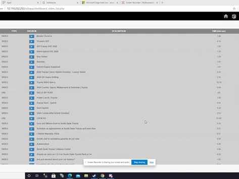

Welcome to My Portfolio
Education
UC San Diego
Major: Computer Engineering
CS Courses
- Software Engineering
- Computer Networks
- Operating Systems
- Component and Design Techniques for Digital Systems
Electrical Engineering
- Introduction to Analog Design
- Circuit and Systems
Featured Projects
-
SSDM Project

The SSDM project tracks vehicles entering and exiting a dealership's service drive using RFID technology, capturing VIN numbers to identify customers and display a personalized welcome message on a multimedia dashboard. It utilizes four RFID devices—one at entry and three at exit points—to log vehicle movements, match VINs in a database, and monitor repair order activity. A real-time monitoring dashboard provides a graphical representation of vehicle locations, tracks customer visits, and records how many customers open or do not open a repair order. -
Network Inventory

The Network Inventory System is designed to track all network devices, including computers, printers, and servers, while managing IP addresses to prevent duplicate assignments. It also monitors device counts per department and provides a filtering system to view specific device types or departments. The system includes a demo showcasing its ability to organize and display network data efficiently. -
Controlled Advertisement
The Controlled Advertisement For Businesses project was developed to reduce software costs by replacing a $1,200-per-year advertisement system with an in-house solution. This custom dashboard manages and loops stored videos throughout the day, featuring Toyota dealership advertisements for branding and comedy videos for customer entertainment. The system ensures a cost-effective way to engage showroom visitors while maintaining control over displayed content.
About Me
Hello everyone! My name is Julio Rivas. I'm currently a Computer Engineering student at UC San Diego.Hobbies:
- Playing video games
- Watching movies
- Reading books
- Lifting Weights
Favorite Computer Science Topics
- Software Engineering
- Computer Networks
- Operating Systems